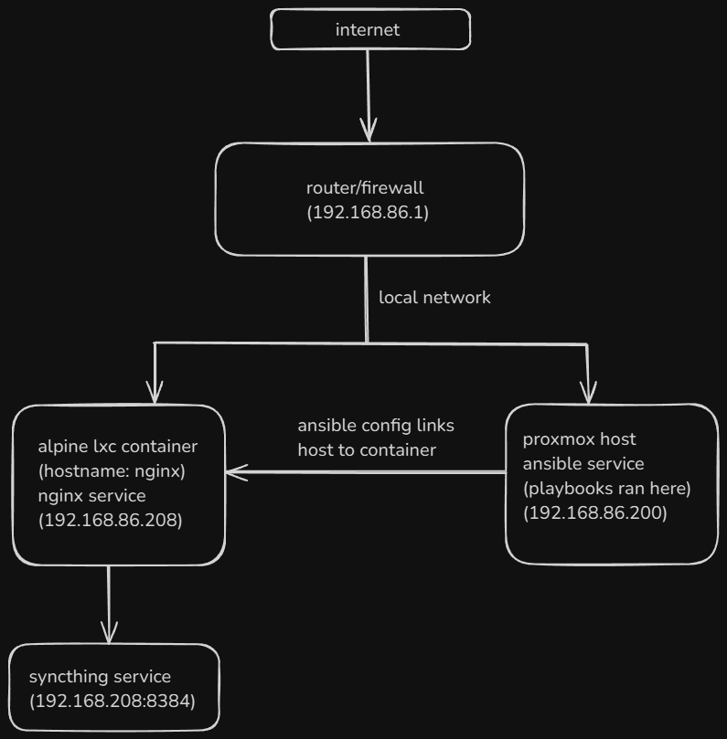

Exposing services with Nginx, Ansible, and Cloudflare
Introduction
Exposing services on the internet can be a daunting task. In this post, we will explore how to expose services using Nginx, Ansible, and Cloudflare. We will use Nginx as a reverse proxy to route traffic to our services, Ansible to automate the configuration of our server, and Cloudflare to manage our DNS records and provide SSL certificates.
Pre-requisites
Before we begin, you will need the following:
- Domain name. This guide is written with the assumption that you have a domain name registered with Cloudflare, but you can adapt it to work with other DNS providers.
- Access to port forwarding on your router. You will need to forward ports 80 and 443 of the server/container/VM running Nginx.
- Self hosted service you would like to expose. For this guide, I used Syncthing.
- Nginx installed (Make sure you are running nginx as a service, and not nginx reverse proxy manager with GUI.)
- Ansible installed on control node. This setup has ansible installed on a host proxmox server and runs the playbook for a container with the hostname
nginx. The inventory file for ansible is what tells ansible which host to run the playbook on.
Cloudflare DNS records
After you have forwarded ports 80 and 443 on your router, you should create a DNS record for your domain. I simply made an A record with the name syncthing and pointed it to my server’s public IP address. This means that when someone visits syncthing.my-domain.com, they will be directed to the syncthing login page.
Ansible Playbook
The most important part of this setup is the Ansible playbook. This playbook will install Nginx, configure it as a reverse proxy, and set up SSL certificates using Let’s Encrypt.
---
- name: Set up Nginx with SSL for Syncthing using Cloudflare DNS challenge
hosts: nginx
become: true
vars:
# Replace with your custom domain
syncthing_domain: "your-domain.com"
# Replace with your Syncthing IP
syncthing_ip: "192.168.86.208"
syncthing_port: "8384"
# Replace with your Cloudflare email
cloudflare_email: "your-cloudflare-email@example.com"
# Replace with your Cloudflare API token
cloudflare_api_key: "YOUR_CLOUDFLARE_API_TOKEN"
cloudflare_credentials_path: "/root/.secrets/cloudflare.ini"
tasks:
- name: Install required packages
apk:
name:
- nginx
- certbot
- certbot-nginx
- certbot-dns-cloudflare
update_cache: yes
notify: restart nginx
- name: Create Cloudflare API credentials file
copy:
dest: "{{ cloudflare_credentials_path }}"
content: |
dns_cloudflare_email = {{ cloudflare_email }}
dns_cloudflare_api_key = {{ cloudflare_api_key }}
mode: "0600"
- name: Ensure web root exists for Certbot challenge
file:
path: /var/www/certbot
state: directory
mode: "0755"
- name: Obtain SSL certificate for Syncthing
command: >
certbot certonly --dns-cloudflare
--dns-cloudflare-credentials {{ cloudflare_credentials_path }}
-d {{ syncthing_domain }} --non-interactive --agree-tos --email your-email@example.com
args:
creates: "/etc/letsencrypt/live/{{ syncthing_domain }}/fullchain.pem"
notify: restart nginx
- name: Deploy Nginx configuration for Syncthing (HTTP)
copy:
dest: /etc/nginx/http.d/syncthing.conf
content: |
server {
listen 80;
server_name {{ syncthing_domain }};
location /.well-known/acme-challenge/ {
root /var/www/certbot;
}
location / {
return 301 https://$host$request_uri;
}
}
notify: restart nginx
- name: Deploy Nginx SSL configuration for Syncthing (HTTPS)
copy:
dest: /etc/nginx/http.d/syncthing-ssl.conf
content: |
server {
listen 443 ssl;
server_name {{ syncthing_domain }};
ssl_certificate /etc/letsencrypt/live/{{ syncthing_domain }}/fullchain.pem;
ssl_certificate_key /etc/letsencrypt/live/{{ syncthing_domain }}/privkey.pem;
include /etc/letsencrypt/options-ssl-nginx.conf;
ssl_dhparam /etc/letsencrypt/ssl-dhparams.pem;
location / {
proxy_pass http://{{ syncthing_ip }}:{{ syncthing_port }}/;
proxy_set_header Host $host;
proxy_set_header X-Real-IP $remote_addr;
proxy_set_header X-Forwarded-For $proxy_add_x_forwarded_for;
proxy_set_header X-Forwarded-Proto $scheme;
proxy_redirect off;
proxy_buffering off;
proxy_set_header Upgrade $http_upgrade;
proxy_set_header Connection "upgrade";
}
}
notify: restart nginx
- name: Ensure Nginx is running
service:
name: nginx
state: started
enabled: yes
handlers:
- name: restart nginx
service:
name: nginx
state: restarted
Ansible Playbook (continued)
This is the command to run the playbook we created above. You should only have to run it once, and it will configure Nginx to serve your service over HTTPS.
ansible-playbook -u ansible nginx-playbook.yml
Server Configuration
This playbook runs on my host server connected to a container with the hostname nginx.
Below is a diagram of my exact setup.

Now that the playbook is created, we should ensure that the nginx service starts automatically on boot. I am running this playbook on Alpine linux so the exact command may vary depending on your distribution.
rc-update add nginx
Conclusion
If you followed this guide, syncthing should now be accessible at https://syncthing.your-domain.com with a valid SSL certificate. This setup is secure, automated, and scalable. You can easily add more services by creating additional Nginx configurations and running the playbook again.